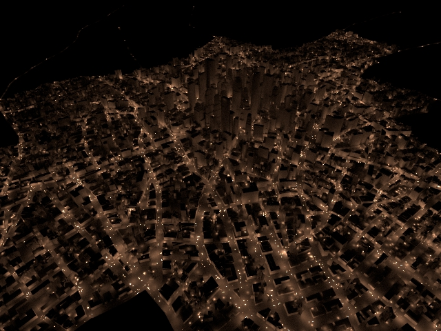

9 August 2023
Important: MtoA 5.3.3.1 includes an important licensing fix for Windows and macOS (there was no issue on Linux).
MtoA 5.3.3 introduces Arnold 7.2.3.0. See also the MtoA 5.3.0 release notes.
| Speedup over 7.2.2 GPU version using 1 light sample | ||
| City (100000 lights) | Classical interior (80 lights) | Automotive studio (9 lights) |
|  | ||
| 48x speedup | 2x speedup | 2.6x speedup |
Procedural Viewport Improvement: Better representation of current frame of procedurals in viewport [MTOA-1480]
Return direction and distance to nearest hit in distance shader: Arnold 7.2.3 adds out_distance and out_direction output parameters to the distance shader, which return the direction and distance to the nearest surface, respectively. The shader still returns the color-mapped result by default, which is now available as the out_rgb parameter. (ARNOLD-13473)
| distance shading effect (Tip: Before you Play, right click and click Loop) |
| Tutorial - Building facade fire damage |
| Tutorial - Eye makeup shading effect |
AiProceduralExpand: A new API AiProceduralExpand expands on demand the contents of a procedural (such as a 'usd', 'alembic', or 'procedural' node), as it would happen in a regular render. You can use this to force the creation of procedural child nodes before the rendering starts, and to avoid race conditions when the procedurals are not thread safe. (ARNOLD-7067)MTOA-991 - Crash when undoing after accessing Arnold viewport
MTOA-985 - MaterialX exported USD file doesn't render in MtoA
MTOA-1407 - XgenArnoldUI.py syntax warning
MTOA-1488 - Crash when deleting imager
MTOA-1326 - Scene crashes Maya when you try to create a render layer
MTOA-1342 - Changing layers in Render Setup starts a render
MTOA-1185 - Render Sequence leaks memory
ARNOLD-13139 - Docked ARV resizes itself when printing status messages
ARNOLD-11990 - Render View crash with overscan
ARNOLD-10643 - FIS no longer forces a box filter
ARNOLD-12917 - Viewport API uses incorrect motion blur reference time
ARNOLD-13645 - Instancer crash if a single node is instanced but set to null
ARNOLD-13678 - Holes in alpha channel when opacity is almost 1
ARNOLD-13741 - Log messages missing colors
ARNOLD-13770 - Name scope clashes with nested procedurals
ARNOLD-13776 - NaNs when using global light sampling with low-light-threshold
ARNOLD-13789 - Corrupted tiff output if skip_alpha and unpremult_alpha are both enabled
usd#1538 - Fix triplanar in USD MaterialX